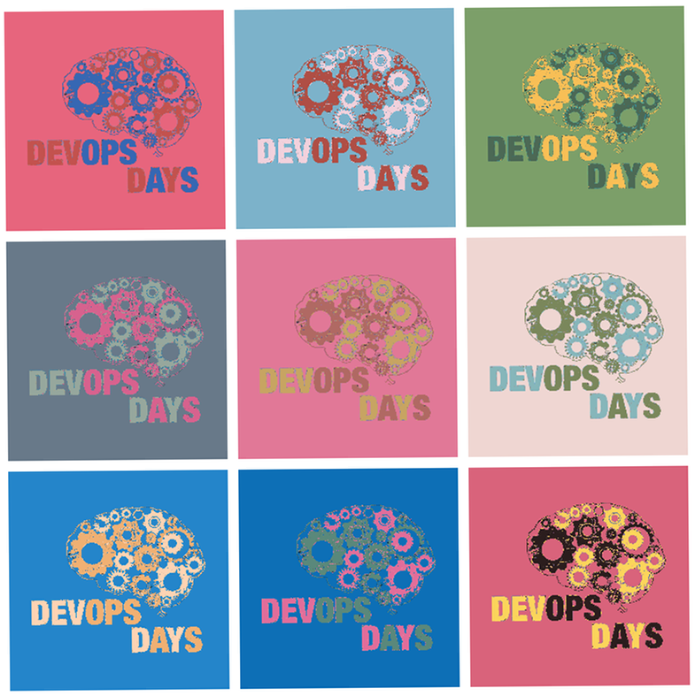
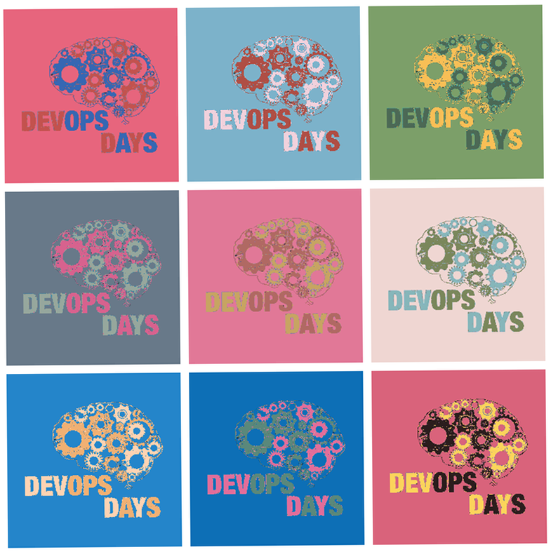

<% @eventhome = @page.directory.split(File::SEPARATOR)[0..1].join(File::SEPARATOR) %>
# devopsdays Pittsburgh n'at!
When: <%= render(:partial => "/#{@eventhome}/_target_date") %>
Where: [University of Pittsburgh](location)
We are proud to put on [this program](program).
The [call for proposals](propose) is open until <%= render(:partial => "/#{@eventhome}/_cfp_date_end") %>.
You can alternatively [propose an Ignite](propose).
It is never too early to get excited about [open spaces](http://devopsdays.org/pages/open-space-format/).
We have a [code of conduct](conduct).
## [Register Now](registration)
and don't forget to plan your [travel](travel) and [track devopdays Pittsburgh on Lanyrd](http://lanyrd.com/2015/devopsdays-pittsburgh/).
see you soon!
### Nice things people have said about devopsdays Pittsburgh
>  "I had a lot of fun at DevOps Days Pittsburgh in 2014. I met dozens of passionate, experienced people interested in changing the culture of development an operations. I even hired two of them!" - [Casey West](https://www.twitter.com/caseywest)
"I had a lot of fun at DevOps Days Pittsburgh in 2014. I met dozens of passionate, experienced people interested in changing the culture of development an operations. I even hired two of them!" - [Casey West](https://www.twitter.com/caseywest)
>  "Devopsdays Pittsburgh 2014, on paper, shouldn't have worked. The stew of people from different backgrounds -- sysadmins, front-end and back-end developers, database administrator, project manager, QA engineer, consultants -- how could these people all get along? But we did, we really really did. The talks were honest and direct, and the open spaces harnessed the chaos of disparate backgrounds into memorable discussions that still resonate over a year later. Recommended if you have anything to do with making or using software." - [Chris Winters](https://www.twitter.com/cwinters)
Jake Champlin shares his formative experience at devopsdays Pittsburgh 2014:
Casey West and Marylou Lenhart have a short conversation about their experience at devopsdays Pittsburgh 2014:

"Devopsdays Pittsburgh 2014, on paper, shouldn't have worked. The stew of people from different backgrounds -- sysadmins, front-end and back-end developers, database administrator, project manager, QA engineer, consultants -- how could these people all get along? But we did, we really really did. The talks were honest and direct, and the open spaces harnessed the chaos of disparate backgrounds into memorable discussions that still resonate over a year later. Recommended if you have anything to do with making or using software." - [Chris Winters](https://www.twitter.com/cwinters)
Jake Champlin shares his formative experience at devopsdays Pittsburgh 2014:
Casey West and Marylou Lenhart have a short conversation about their experience at devopsdays Pittsburgh 2014:
